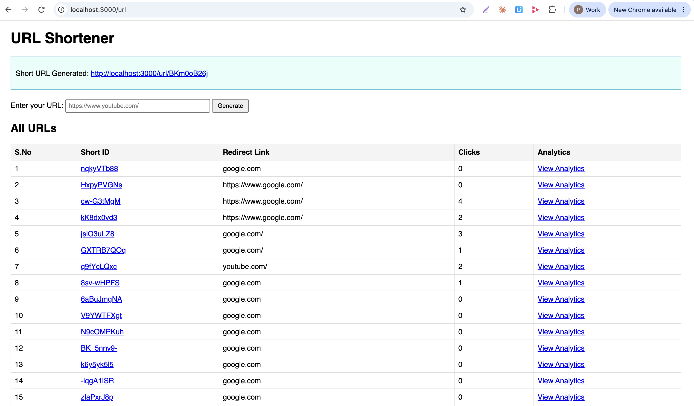
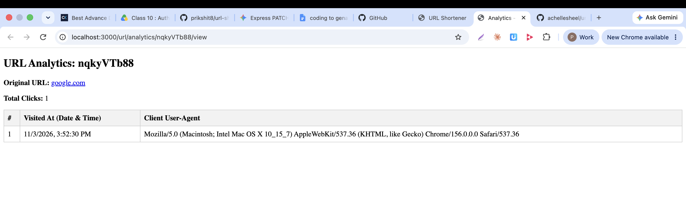

URL Shortener
Turn long links into short ones and track every click.
Node.jsExpress 5MongoDBMongooseEJS
About this page: GitHub Pages only serves static files, so the working app (Node server and MongoDB) can't run here. This page shows what the project does. To try it, clone the repo and follow the run steps in the README.
Screenshots


Functionality
- Generate a unique short ID for any URL (
POST /url), from the form or as JSON. - Redirect from
/url/:shortId, addinghttps://when it's missing. - Record every visit with a timestamp and the visitor's user-agent.
- Analytics page per link at
/url/analytics/:shortId/view. - Home page table of all links with click counts.
Challenging bugs and fixes
| Symptom | Cause | Fix |
|---|---|---|
Cannot POST / in Postman | Router mounted at /url | Send the request to /url |
| EJS: could not find matching close tag | <%})> instead of <% }) %> | Close tags with %> |
urls is not defined | Template rendered without data | Query MongoDB and pass { urls } |
Cannot GET /ejs/<id> | Wrong base path for short links | Link to /url/<id> |
| Generate button just reloaded the page | Typo <formb so no form existed | Use <form method="POST" action="/url"> |
| 400 "url is required" from the form | Only express.json() was registered | Add express.urlencoded() |
Syntax error in shortened.ejs | Braces inside the tag and =%> | Use <%= shortenedURL %> |
| Analytics page always errored | URL.findOne used the global URL class | Use the Mongoose model |
| List vanished after generating a link | Separate result page without the list | Render home with the new id and full urls |
The full list is in the README.